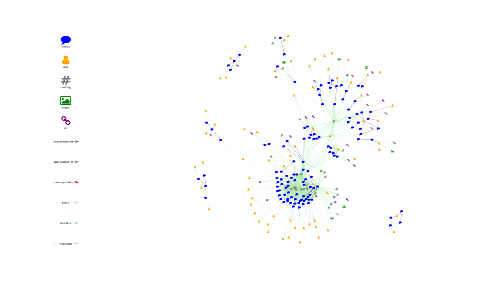

Usage
Write Gephi-Friendly .graphml Files


Knowledge Graph
as_kg_primitive()
#> $edges
#> [1] "source" "target" "time" "source_class"
#> [5] "action" "target_class"
#>
#> $nodes
#> [1] "name" "timestamp_ms" "created_at"
#> [4] "text" "source" "lang"
#> [7] "node_class" "TWITTER_NAME" "screen_name"
#> [10] "location" "description" "url"
#> [13] "protected" "followers_count" "friends_count"
#> [16] "listed_count" "statuses_count" "favourites_count"
#> [19] "account_created_at" "verified" "profile_url"
#> [22] "account_lang"
Using {igraph}
#> IGRAPH 720affa DN-- 247 851 --
#> + attr: name (v/c), timestamp_ms (v/n), created_at (v/n), text
#> | (v/c), source (v/c), lang (v/c), node_class (v/c), TWITTER_NAME
#> | (v/c), screen_name (v/c), location (v/c), description (v/c), url
#> | (v/c), protected (v/l), followers_count (v/n), friends_count
#> | (v/n), listed_count (v/n), statuses_count (v/n),
#> | favourites_count (v/n), account_created_at (v/n), verified
#> | (v/l), profile_url (v/c), account_lang (v/l), time (e/n),
#> | source_class (e/c), action (e/c), target_class (e/c)
#> + edges from 720affa (vertex names):
#> [1] 1184982560247631873->1184989314238894080
#> + ... omitted several edges#> IGRAPH 720b74e DN-- 247 851 --
#> + attr: name (v/c), timestamp_ms (v/n), created_at (v/n), text
#> | (v/c), source (v/c), lang (v/c), node_class (v/c), TWITTER_NAME
#> | (v/c), screen_name (v/c), location (v/c), description (v/c), url
#> | (v/c), protected (v/l), followers_count (v/n), friends_count
#> | (v/n), listed_count (v/n), statuses_count (v/n),
#> | favourites_count (v/n), account_created_at (v/n), verified
#> | (v/l), profile_url (v/c), account_lang (v/l), time (e/n),
#> | source_class (e/c), action (e/c), target_class (e/c)
#> + edges from 720b74e (vertex names):
#> [1] 1184982560247631873->1184989314238894080
#> + ... omitted several edges
Using {network}
#> Network attributes:
#> vertices = 247
#> directed = TRUE
#> hyper = FALSE
#> loops = TRUE
#> multiple = FALSE
#> bipartite = FALSE
#> total edges= 851
#> missing edges= 0
#> non-missing edges= 851
#>
#> Vertex attribute names:
#> account_created_at account_lang created_at description favourites_count followers_count friends_count lang listed_count location node_class profile_url protected screen_name source statuses_count text timestamp_ms TWITTER_NAME url verified vertex.names
#>
#> Edge attribute names:
#> action source source_class target_class time#> Network attributes:
#> vertices = 247
#> directed = TRUE
#> hyper = FALSE
#> loops = TRUE
#> multiple = FALSE
#> bipartite = FALSE
#> total edges= 851
#> missing edges= 0
#> non-missing edges= 851
#>
#> Vertex attribute names:
#> account_created_at account_lang created_at description favourites_count followers_count friends_count lang listed_count location node_class profile_url protected screen_name source statuses_count text timestamp_ms TWITTER_NAME url verified vertex.names
#>
#> Edge attribute names:
#> action source source_class target_class time


Social Network Analysis
as_sna_primitive()Using
{igraph}Using
{network}